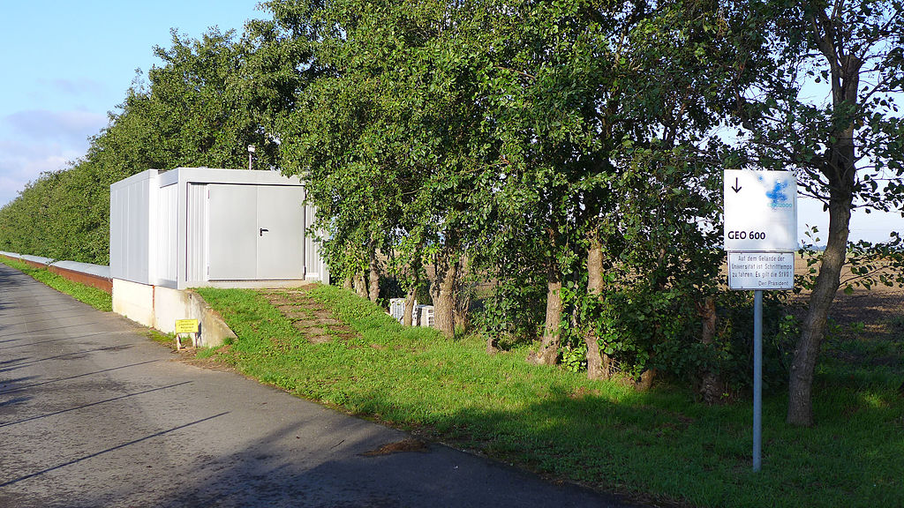

List of gravitational waves observatories
GEO600
Laser interferometer gravitational-wave observatory (LIGO)
The Laser Interferometer Gravitational-Wave Observatory (LIGO) is a large-scale physics experiment and observatory to detect cosmic gravitational waves and to develop gravitational-wave observations as an astronomical tool. Two large observatories were built in the United States with the aim of detecting gravitational waves by laser interferometry. These can detect a change in the 4 km mirror spacing of less than a ten-thousandth the charge diameter of a proton. The initial LIGO observatories were funded by the National Science Foundation (NSF) and were conceived, built and are operated by Caltech and MIT. They collected data from 2002 to 2010 but no gravitational waves were detected. The Advanced LIGO Project to enhance the original LIGO detectors began in 2008 and continues to be supported by the NSF, with important contributions from the United Kingdom's Science and Technology Facilities Council, the Max Planck Society of Germany, and the Australian Research Council. The improved detectors began operation in 2015. The detection of gravitational waves was reported in 2016 by the LIGO Scientific Collaboration (LSC) and the Virgo Collaboration with the international participation of scientists from several universities and research institutions. Scientists involved in the project and the analysis of the data for gravitational-wave astronomy are organized by the LSC, which includes more than 1000 scientists worldwide, as well as 440,000 active Einstein@Home users as of December 2016. LIGO is the largest and most ambitious project ever funded by the NSF. In 2017, the Nobel Prize in Physics was awarded to Rainer Weiss, Kip Thorne and Barry C. Barish "for decisive contributions to the LIGO detector and the observation of gravitational waves." Observations are made in "runs". As of December 2019, LIGO has made 3 runs, and made 50 detections of gravitational waves. Maintenance and upgrades of the detectors are made between runs. The first run, O1, which ran from 12 September 2015 to 19 January 2016, made the first 3 detections, all were black hole mergers. The second run, O2, which ran from 30 November 2016 to 25 August 2017, made 8 detections, 7 black hole mergers, and the first neutron star merger. The third run, O3 began on 1 April 2019; it is divided (so far) into O3a, from 1 April to 30 September 2019, and O3b, from 1 November 2019 to the present (December 2019).
LIGO Hanford observatory
LIGO Livingston observatory
Virgo interferometer (VIRGO)
The Virgo interferometer is a large interferometer designed to detect gravitational waves predicted by the general theory of relativity. Virgo is a Michelson interferometer that is isolated from external disturbances: its mirrors and instrumentation are suspended and its laser beam operates in a vacuum. The instrument's two arms are three kilometres long and located in Santo Stefano a Macerata, near the city of Pisa, Italy. Virgo is part of a scientific collaboration of laboratories from six countries: Italy and France, the Netherlands, Poland, Hungary and Spain. Other interferometers similar to Virgo have the same goal of detecting gravitational waves, including the two LIGO interferometers in the United States (at the Hanford Site and in Livingston, Louisiana). Since 2007, Virgo and LIGO have agreed to share and jointly analyze the data recorded by their detectors and to jointly publish their results. Because the interferometric detectors are not directional (they survey the whole sky) and they are looking for signals which are weak, infrequent, one-time events, simultaneous detection of a gravitational wave in multiple instruments is necessary to confirm the signal validity and to deduce the angular direction of its source. The interferometer is named for the Virgo Cluster of about 1,500 galaxies in the Virgo constellation, about 50 million light-years from Earth. As no terrestrial source of gravitational wave is powerful enough to produce a detectable signal, Virgo must observe the Universe. The more sensitive the detector, the further it can see gravitational waves, which then increases the number of potential sources. This is relevant as the violent phenomena Virgo is potentially sensitive to (coalescence of a compact binary system, neutron stars or black holes; supernova explosion; etc.) are rare: the more galaxies Virgo is surveying, the larger the probability of a detection.
Kamioka gravitational wave detector (KAGRA)
The Kamioka Gravitational Wave Detector (KAGRA), formerly the Large Scale Cryogenic Gravitational Wave Telescope (LCGT), is a project of the gravitational wave studies group at the Institute for Cosmic Ray Research (ICRR) of the University of Tokyo. It is the world's first gravitational wave observatory in Asia, the first built underground, and the first whose detector uses cryogenic mirrors. The design calls for an operational sensitivity equal to, or greater, than LIGO. The initial LIGO observatories were funded by the National Science Foundation (NSF) and were conceived, built and are operated by Caltech and MIT. They collected data from 2002 to 2010 but no gravitational waves were detected. The Advanced LIGO Project to enhance the original LIGO detectors began in 2008 and continues to be supported by the NSF, with important contributions from the United Kingdom's Science and Technology Facilities Council, the Max Planck Society of Germany, and the Australian Research Council. The improved detectors began operation in 2015. The detection of gravitational waves was reported in 2016 by the LIGO Scientific Collaboration (LSC) and the Virgo Collaboration with the international participation of scientists from several universities and research institutions. Scientists involved in the project and the analysis of the data for gravitational-wave astronomy are organized by the LSC, which includes more than 1000 scientists worldwide, as well as 440,000 active Einstein@Home users as of December 2016. LIGO is the largest and most ambitious project ever funded by the NSF. In 2017, the Nobel Prize in Physics was awarded to Rainer Weiss, Kip Thorne and Barry C. Barish "for decisive contributions to the LIGO detector and the observation of gravitational waves." Observations are made in "runs". As of December 2019, LIGO has made 3 runs, and made 50 detections of gravitational waves. Maintenance and upgrades of the detectors are made between runs. The first run, O1, which ran from 12 September 2015 to 19 January 2016, made the first 3 detections, all were black hole mergers. The second run, O2, which ran from 30 November 2016 to 25 August 2017, made 8 detections, 7 black hole mergers, and the first neutron star merger. The third run, O3 began on 1 April 2019; it is divided (so far) into O3a, from 1 April to 30 September 2019, and O3b, from 1 November 2019 to the present (December 2019).
 GEO600 is a gravitational wave detector located near Sarstedt in the South of Hanover, Germany. It is designed and operated by scientists from the Max Planck Institute for Gravitational Physics, Max Planck Institute of Quantum Optics and the Leibniz Universität Hannover, along with University of Glasgow, University of Birmingham and Cardiff University in the United Kingdom, and is funded by the Max Planck Society and the Science and Technology Facilities Council (STFC). GEO600 is part of a worldwide network of gravitational wave detectors. This instrument, and its sister interferometric detectors, when operational, are some of the most sensitive gravitational wave detectors ever designed. They are designed to detect relative changes in distance of the order of 10−21, about the size of a single atom compared to the distance from the Sun to the Earth. GEO600 is capable of detecting gravitational waves in the frequency range 50 Hz to 1.5 kHz. Construction on the project began in 1995.
In 2001 the Max Planck Institute for Gravitational Physics (Albert Einstein Institute, AEI) in Potsdam took over the Hannover branch of the MPQ, and since 2002 the detector is operated by a joint Center of Gravitational Physics of AEI and Leibniz Universität Hannover, together with the universities of Glasgow and Cardiff. Since 2002 GEO600 participated in several data runs in coincidence with the LIGO detectors. In 2006, GEO600 has reached the design sensitivity, but up to now no signal has been detected. The next aim is to reduce the remaining noise by another factor of about 10, until 2016.
List of gravitational waves from neutron star collision
| GW event | Luminosity distance (Mpc) | Chirp mass (M☉) | Primary mass (M☉) | Secondary mass (M☉) | Remnant mass (M☉) | Notes |
|---|---|---|---|---|---|---|
| GW170817 | 40 | 1.186 | 1.46 | 1.27 | 2.8 | First NS merger observed in GW; first detection of EM counterpart (GRB 170817A; AT 2017gfo); nearest event to date |
| GW190425 | 156 | 1.44 | 1.60-1.87 | 1.46-1.69 | 3.3 | Originally designated S190425z (z:26th trigger|UTC day), this trigger was detected by a single LIGO instrument (of three LVC stations), and is considered by some scientists to have been confirmed as a binary neutron star merger.
GW190425: Observation of a Compact Binary Coalescence with Total Mass 3.4M☉ |